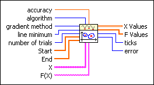
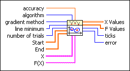

Find All Minima nD VI
Owning Palette: Optimization VIs
Requires: Full Development System
Determines the minima of an n-dimension function in a given n-dimension interval.

 Add to the block diagram Add to the block diagram |
 Find on the palette Find on the palette |
Owning Palette: Optimization VIs
Requires: Full Development System
Determines the minima of an n-dimension function in a given n-dimension interval.

| Add to the block diagram |
Find on the palette |
 |
accuracy controls the accuracy of the minima. The default is 1.00E-8. |
 |
algorithm specifies the method used by the VI. When algorithm is 0 it represents the Conjugate Gradient method. When algorithm is 1, it represents the Downhill Simplex method. The default is 0. |
|
gradient method specifies the algorithm used to compute the derivatives. A value of 0 represents the Fletcher Reeves method. A value of 1 represents the Polak Ribiere method. The default is 0. |
|
line minimum A value of 0 represents the line optimization without derivatives. A line minimum value of 1 represents the line optimization with derivatives. The default is 0. |
 |
number of trials is the number of the randomly chosen start points of the optimization process. These points belong to the interval (start,end). The default is 5. |
 |
Start is the start point in n dimension. |
|
End is the end point in n dimension. |
 |
X is an array of strings describing the n variables. |
 |
F(X) is a string describing the n dimension function of X. The formula can contain any number of valid variables. |
 |
X Values is a matrix describing all determined local minima. |
 |
F Values is the function values at the points X Values. |
 |
ticks is the time in milliseconds for the whole calculation. |
 |
error returns any error or warning from the VI. You can wire error to the Error Cluster From Error Code VI to convert the error code or warning into an error cluster. |
Refer to the 2D Explorer VI in the labview\examples\Mathematics\Optimization directory for an example of using the Find All Minima nD VI.
 Open example Find related examples
Open example Find related examples